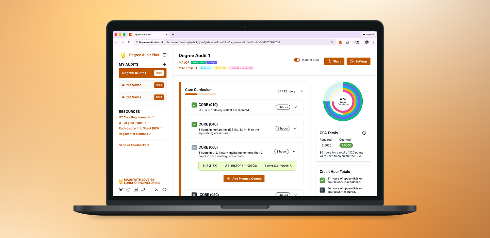
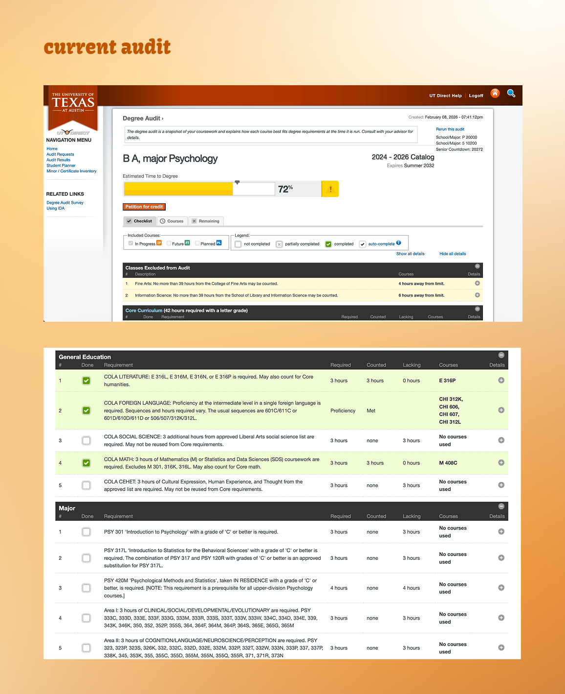
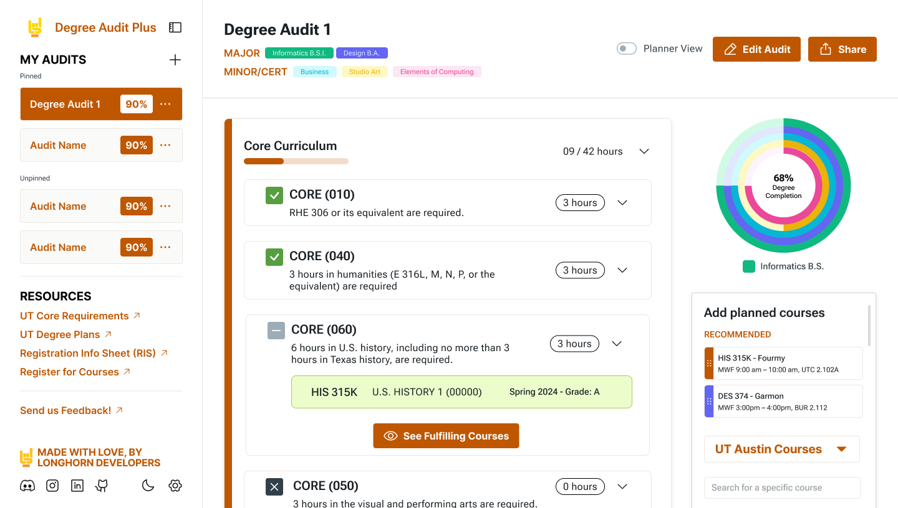
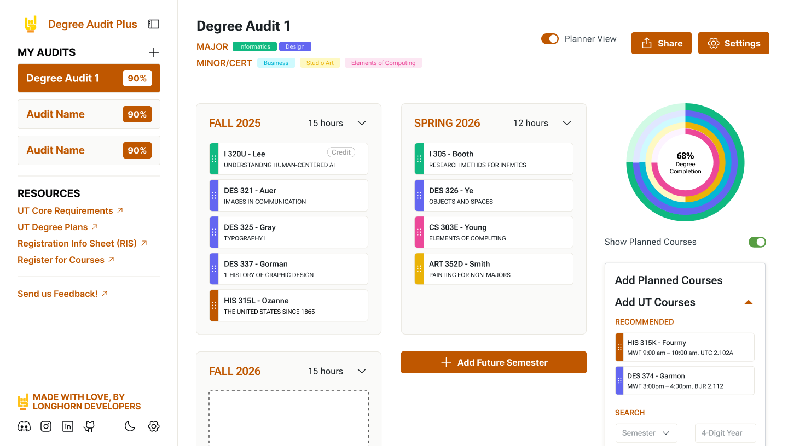

progress overview
A high-level progress overview so students immediately know where they stand

How can we help students actually understand their degree progress without overwhelming them?
I lead the design of Degree Audit Plus, a browser extension that reimagines UT’s Interactive Degree Audit. I focus on turning dense, hard-to-scan requirements into a more visual, intuitive experience that helps students understand progress and plan ahead with confidence.
Many students struggle to make sense of their degree audits. It’s hard to quickly tell what’s done, what’s still missing, and how future classes might impact graduation. This creates unnecessary stress and often forces students to rely heavily on advising for questions that should be easy to answer on their own.

Degree Audit Plus is a browser extension that reimagines UT Austin’s Interactive Degree Audit (IDA). The existing system contains a lot of important information, but it’s dense and hard to scan.
Our goal was to turn that information into something more visual, intuitive, and confidence-building so students can better understand their degree progress and plan ahead.
Because degree audits are inherently complicated, my main focus was reducing cognitive load and making information easier to scan.


progress overview
A high-level progress overview so students immediately know where they stand
visual grouping
Clear visual grouping of requirements (Core, Major, Minor, Electives) + color and status indicators to show what’s complete, in progress, or missing
planning features
The ability to add hypothetical courses and see how they impact progress
Right now, we’re finishing high-fidelity screens and handing them off to development. I’ve been working closely with engineers to answer questions, refine interactions, and make sure designs translate smoothly into code.
Once development is further along, we’ll move into user testing with UT students to see whether the interface actually feels clearer, if students feel more confident planning ahead, and where things still feel confusing or overwhelming.
Degree Audit Plus is still very much a work in progress, but the goal is simple: make degree planning feel less intimidating, and a lot more human.